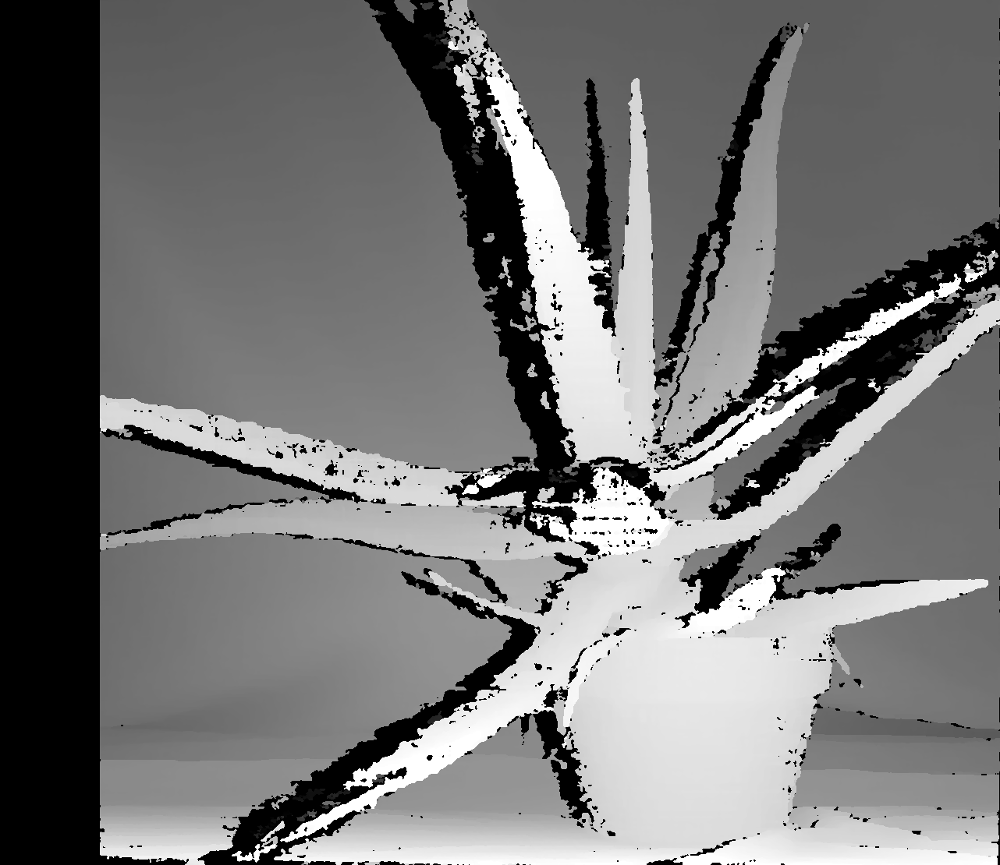
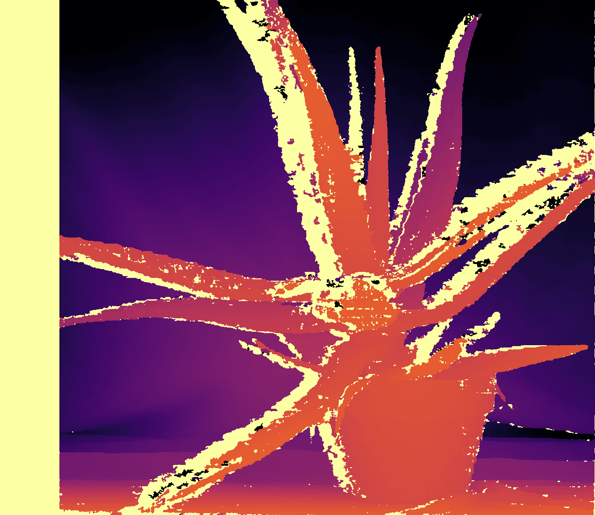
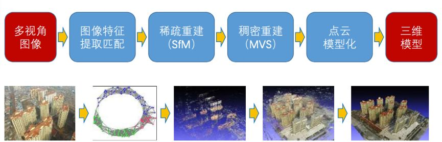

3D重建：从双目匹配开始
26年越来越少动笔了，主要是对推荐系统的学习有点动力不足，尤其是步入生成式召回后，这些模型对大数据量和多卡集群的要求比较高，本地难以复现工业界模型。另一方面是花了不少时间在研究股票上，对技术的挖掘懈怠了，自我检讨。
短时间实在不想再看推荐系统，所以了解一些感兴趣的主题。3D重建是我很感兴趣的方向，但由于对图形学毫无了解，我打算从头开始了解重建这个领域。这篇博文的很多内容来自chatgpt/线上博客和开源项目，个人的一些粗浅理解可能存在偏差。
3D重建和U-NET, GAN与Diffusion
说到重建，我第一时间想到的是U-NET, GAN这样的模型，通过对原始2D图片加噪去噪降低loss得到一个模型，3D重建只是在数据层面上多了空间维度。gpt给的答案是：这些范式已经被运用到这个领域，但并不是数据上加维度这么简单，还涉及到几何，视角，坐标系，一致性等物理空间约束问题。
强调的一点是数据量爆炸，因为多一个维度意味着指数级提升，如果每个像素还保存一些物理细节和梯度，会导致显存占用远比2D重建更多。同时3D重建要求各个视角的一致性，意味着要从360度做完整的还原，这都是这个领域存在的问题。
双目匹配
3D重建在早期的应用，主要是通过双目视觉的原理，对同一个物品拍照，通过模拟左右眼的位置，找到双目两个图上的对应点，计算出视差距离后得到深度图（也就是这个物品距离相机的距离），最后生成点云或网格，这样就获取到了2D图中的深度信息。
视差是同一个点在两个图片中的位置差。通过视差能反推出距离，也就是深度。依次对每个像素点计算深度，最后就得到了一系列3d点，这就是点云。
视差的计算需要对同一个点在左右图进行匹配后得到，这是双目匹配的核心。基本上是做类似滑动窗口，取一小块patch，在另外一边找最相似的patch，通过一个代价函数来决定两个patch是否相似，例如灰度差越小越相似，最后取代价最小的视差作为预测的视差。
双目相机有两个镜头，一左一右，他们之间的距离记录为B。同时记录相机的焦距f，例如800像素。
得到两个照片后，需要进行极线校准。因为我们知道左边照片上的一个点，肯定对应在右照片上的某个延展线上，这个线就叫极线。这是为了更好计算，知道左边的一个点，只需要在右边的极线上找另外一个点。对齐以后，任务就变成了给左边的每个像素，在右边的极线上找最相似的位置。
现在有了焦距，基线和视差，可以通过焦距乘基线后，除以视差，这样就还原得到了一个点的深度。
做了简单的demo来实现双目深度匹配。通过给定校准过后的双目图，双目基线，焦距等参数，会将原始双目图返回一个深度图和点云图。


双目匹配在2000年初比较火，但双目匹配的效果受匹配精度影响，实际应用上有很多限制。
多视角重建（MVS: Multi-View Stereo）
双目只有两个图，后面发展出多个图重建出点云，就是多视角立体重建（Multi-View Stereo，MVS）。
多视角重建的思路也是一样的：同一个 点在不同相机图像中会出现在不同位置，通过位置差，可以反推出深度。
实现上由两部分组成，首先估计每个照片的相机定位，然后根据定位做匹配。已经知道很多张照片分别是从哪里拍的，然后利用这些照片之间的视觉一致性，恢复场景表面的稠密三维结构。
这里涉及到SfM（从运动恢复结构），它将多个不同角度的照片提取出相机的内参（焦距，主点，畸变参数，图像尺寸）和相机外参（相机的位置和朝向）以及稀疏的点云。随后将每张图片的深度图融合成稠密点云/深度图/Mesh。
Mesh 指的是网格，3D图形通过多边形网格组成，一个模型由多个mesh组合，一个mesh由多个多边形（通常是三角形）组成。
另一个相似的概念是高斯：高斯类似一个半透明的三维椭圆球体，通过层层叠加来近似拟合成人眼中真实的场景，相比mesh的精度要低，更偏向视觉真实的效果
3D 世界由一组 3D 点表示，实际上有数百万个 3D 点，数量大约为 50 万到 500 万。每个点都是一个 3D 高斯，具有自己独特的参数，这些参数根据场景进行拟合，以便该场景的渲染与已知的数据集图像紧密匹配。 --bimant。
MVS的思想是同一个点，不同位置看过去，应该有相似的颜色纹理。假定一个像素的深度是d，对应到3D点 P，这个P投影到其他照片里，对应的颜色纹理应该相似。最后取最多照片看到的图像最一致的深度，作为最终深度。
估计深度的流程如下：
-
给每个像素尝试多个深度候选
-
把候选点投影到其他图
-
比较局部纹理一致性
-
选择最一致的深度
深度图融合
只有深度图还不够，完整的3D模型需要将深度图进行融合，将深度图中的每个像素根据相机参数反向投影为3D点后，合并重复点，删除不一致的点，最终获得稠密点云。
在github上看了一圈，这个方向的研究在这几年还持续有产出，并不是一个过时的方向，各方面的改进和创新也很多，包括匹配加速，表面重建等等。
从运动恢复结构（SfM: Structure from Motion）
sfm将一组图片里中同一物点的像素坐标推断出拍摄各个图像时照相机的相对位姿和真实世界中物点的三维坐标，构建出的场景稀疏的三维结构，也就是稀疏点云。
它的输入是多张照片，输出是每张照片的相机位姿(pose)，稀疏点云和相机内参。对比稠密点云，稀疏点云类似于人体结构估计的关键骨骼点。
要做到这一点首先要找关键点，即点，孔这样特征鲜明，纹理独特的点，然后通过特征匹配来在另外一张图里找到对应的相同点，在匹配的过程中会用多个方法来过滤错误匹配，例如排除非极线上的相似点。
sfm的特征点匹配和双目匹配的深度匹配有点类似，区别点在于，双目匹配要对照片中每个像素（或者说patch）做深度匹配，目的是求深度，而sfm只需对特征关键点做匹配，目的是找到相机旋转，相机平移这样的内参。这些内参足够定位相机的位置。
在知道相机位置和特征点在照片里的像素位置后，可以反推出3D点。这里用到了三角化的概念：两个照片中的像素都对应两个相机发出的射线，真实3D点在这两个射线的交汇处。
这样完成了两个图片的3D点映射，随后在多个照片上做同样操作就会得到更多稀疏的特征点。
在完成后还需要一个全局优化，以避免其中每个环节中的误差。这个优化方法被称为Bundle Adjustment。它将前面生成的3D点映射再投影回照片，和原照片对比差异，直到差异最小时完成优化。
最后网图总结一下：

先了解到这，本来以为不难，但是越看发现要了解的公式和原理越多，比我想象的深度要深的多，以后慢慢再看下去。
2026/5/28 于苏州